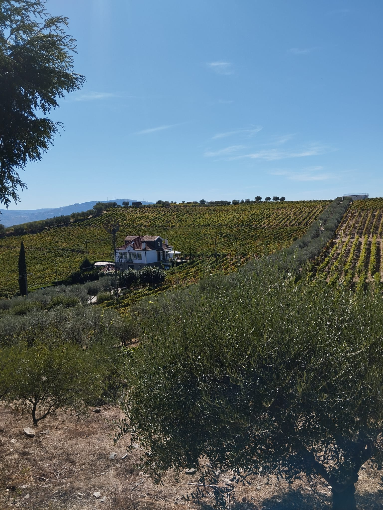
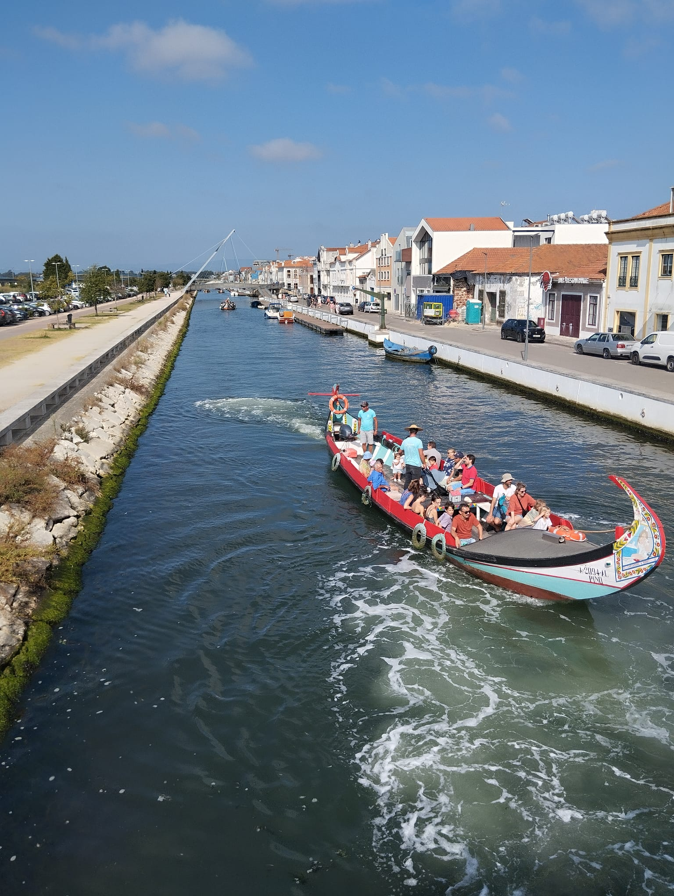
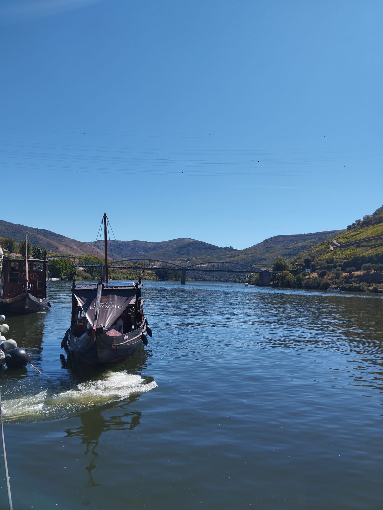
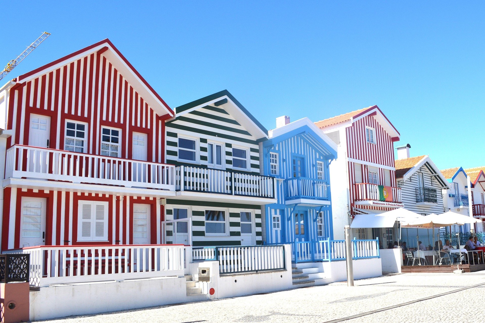
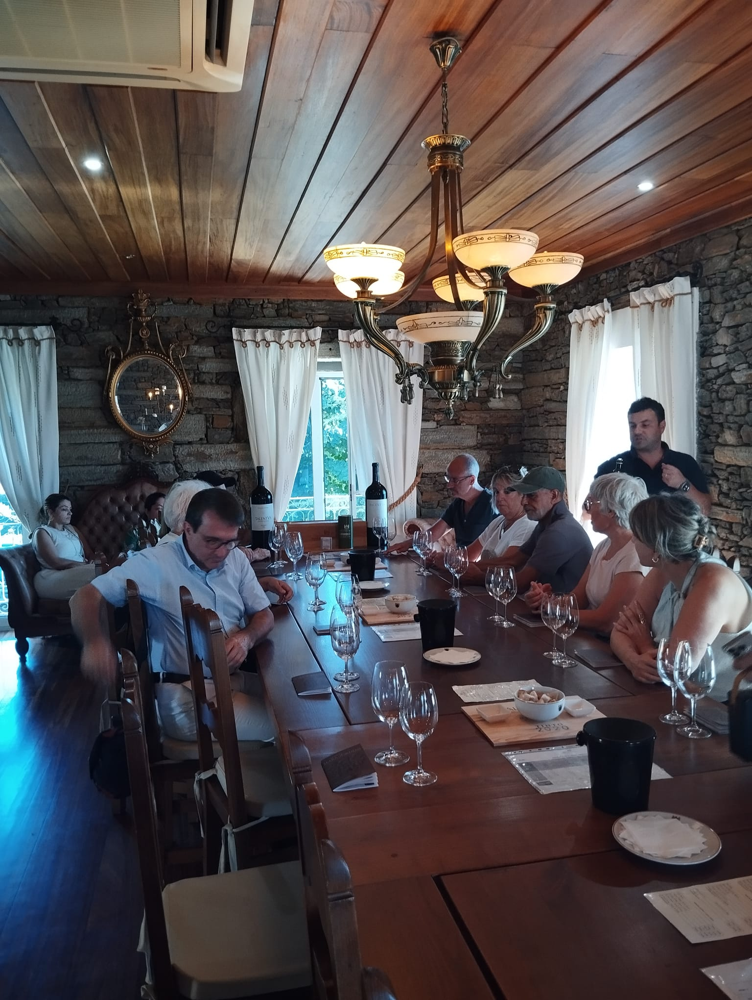
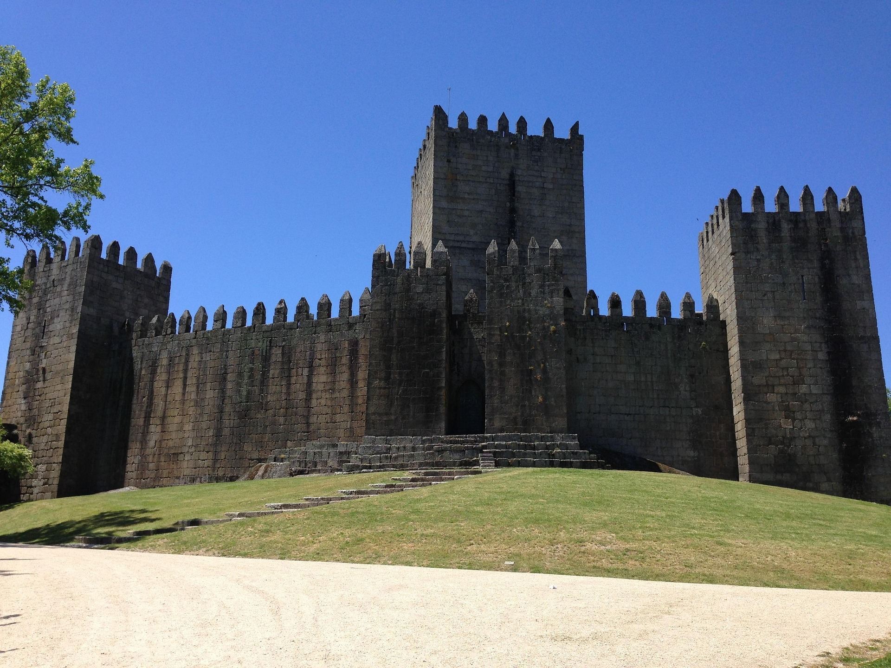

Galeria de Destinos
Momentos únicos e paisagens deslumbrantes
Descubra a beleza do Norte de Portugal através dos nossos olhos










Experiências dos Nossos Clientes
Momentos especiais capturados durante os nossos tours

Família Thompson - Reino Unido
"Uma experiência inesquecível no Vale do Douro! A nossa guia Maria foi fantástica e os vinhos que provámos eram excepcionais. Definitivamente voltaremos!"

Sophie & Pierre - França
"Aveiro é magnífica! Os barcos moliceiros, os ovos moles, a Costa Nova... Tudo perfeitamente organizado. Merci beaucoup, Recreio Célebre!"

Marco & Grupo - Alemanha
"Tour privado ao Porto foi perfeito! Vimos tudo: Ribeira, Clérigos, Lello, caves do vinho... E o transfer do aeroporto foi impecável!"
Destinos em Destaque
Os locais mais procurados pelos nossos clientes

Crie as Suas Próprias Memórias
Venha descobrir estes lugares incríveis connosco.
Cada destino tem uma história para contar, cada tour é uma aventura única.
Partilhe Connosco
Visitou alguns destes locais connosco? Partilhe as suas fotos nas redes sociais usando #RecreioGelebreTransfers e apareça na nossa galeria!